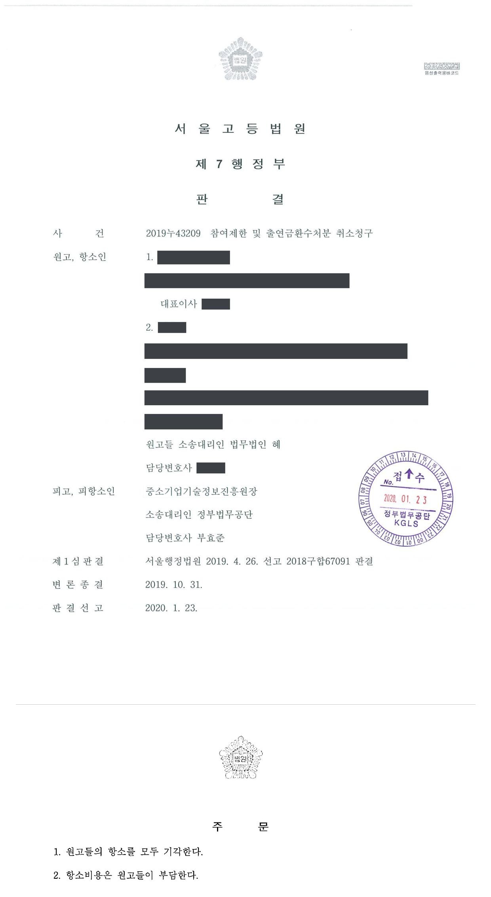

국가연구개발사업 참여제한 및 출연금 환수처분 취소소송 (1·2심)
서울행정법원 2018구합67091 · 서울고등법원 2019누43209 · 담당변호사 부효준
판결문


사건의 요지
연구마을 과제의 참여기업과 임원들에 대한 참여제한처분에 관하여, 원처분과 이의결정 중 무엇이 항고소송의 대상인지(본안전 항변)와 처분사유의 존재 여부가 다투어진 사건입니다.
사건의 주요 내용
원고들은 대학 산학협력단이 주관기관으로 수행한 연구마을 과제에 참여기업으로 참여한 회사와 그 임원들입니다. 이 과제는 공인인증기관의 시험성적서가 최종평가 이후에야 제출되어 목표를 달성하지 못한 것으로 평가되었고, 전문기관은 2017년 12월 주관기관인 산학협력단에 대하여 정부출연금 81,124,551원의 환수를, 원고들에 대하여 3년의 중소기업기술개발지원사업 참여제한을 하는 처분(원처분)을 하였습니다.
산학협력단과 원고들이 이의신청을 하자, 전문기관은 2018년 3월 처분사유와 양정을 다시 심사한 뒤 환수금액과 참여제한기간(3년)은 그대로 두되 환수금 납부기한을 2018년 4월로, 참여제한기간을 2018년 3월부터 2021년 3월까지로 바꾸어 통지하였습니다(이의결정). 원고들은 이 이의결정에 따른 출연금환수처분과 참여제한처분의 취소를 구하는 소송을 제기하였고, 부효준 변호사는 전문기관을 대리하였습니다.
1심(서울행정법원 2018구합67091)은 2019년 4월 원고들의 청구를 받아들이지 않았고, 원고들이 항소하였습니다. 항소심(서울고등법원 2019누43209)은 1심 판결의 이유를 대부분 그대로 인용하면서, 전문기관의 본안 전 항변에 관한 판단 부분을 고쳐 쓰고 감면 주장과 평등원칙 위반 주장에 관한 판단을 추가하여 2020년 1월 항소를 받아들이지 않았습니다.
쟁점
- 이의신청에 따라 납부기한과 참여제한기간을 바꾸어 통지한 이의결정이 원처분과 별개로 항고소송의 대상이 되는 새로운 처분인지
- 운영요령에 근거한 이의신청만으로 원처분의 효력이 정지되는지
- 주관기관의 행정적 안내가 없어 시험성적서를 제때 내지 못한 참여기업에게 귀책사유가 없다고 보아 처분을 감면해야 하는지, 다른 과제의 감면 사례에 비추어 평등원칙 위반인지
원고(항소인)의 주장
- 원고들은 연구개발과정을 성실하게 수행하였는데, 연구개발과정을 관리할 책임이 있는 산학협력단과 과제책임자가 행정적 안내를 하지 않아 공인인증기관의 시험성적서를 제때 제출하지 못하였고 그 때문에 과제 목표를 달성하지 못한 것이므로, 산학협력단과 달리 귀책사유가 없는 원고들에 대한 환수금 처분 등은 감면되어야 한다고 주장하였습니다.
- 공인인증기관의 시험성적서를 최종평가 이후에 제출한 다른 과제의 참여기업 등에 대하여는 참여제한과 환수가 감면된 사례가 있으므로, 원고들에 대한 처분은 평등원칙에 어긋나 위법하다고 주장하였습니다.
부효준 변호사의 주장
- 본안 전 항변으로, 항고소송의 대상이 되는 처분은 원처분만이고, 이의결정은 종전 처분을 그대로 유지함을 전제로 그 내용 일부를 변경하여 업무처리의 적정과 원고들의 편의를 도모한 조치에 불과하여 대상적격이 없으므로, 이의결정이 항고소송의 대상임을 전제로 한 소는 부적법하다고 주장하였습니다.
- 이의신청이 있으면 원처분의 효력이 정지되므로 이의결정에서 납부기한과 참여제한기간을 새로 정한 것일 뿐 원처분의 내용을 실질적으로 바꾼 것이 아니라고 주장하였습니다.
- 본안에서는 참여기업인 원고들도 협약상 산학협력단과 함께 협약서·과제개발계획서와 관계법령을 지킬 의무를 부담하고 과제의 목표와 수행 요건은 원고들 스스로 작성한 사업계획서에 따른 것이므로 원고들에게 귀책사유가 없다고 할 수 없으며, 처분사유와 경위가 다른 과제의 감면 사례를 들어 평등원칙 위반을 주장할 수 없다고 다투었습니다.
법원의 판단
항소심은 본안 전 항변을 받아들이지 않았습니다. 원처분과 이의결정은 환수금액과 참여제한기간(3년)이 같지만 납부기한과 참여제한의 시기·종기가 달라졌고, 운영요령 제39조에 근거한 이의신청만으로 원처분의 효력이 정지된다고 볼 법령상 근거가 없어 원처분에 따른 참여제한의 효력은 그대로 발생하였으므로, 원고들은 결국 원처분의 시기부터 이의결정의 종기까지 총 3년 88일 동안 참여제한을 받는 새로운 불이익을 입게 되었다는 것입니다.
또한 전문기관이 이의결정을 하면서 원처분과 같은 형식으로 처분사유와 양정을 다시 심사하였고 안내서에 행정심판·행정소송을 제기할 수 있다고 적은 점을 들어, 이의결정은 원처분을 변경한 새로운 처분으로서 항고소송의 대상이 된다고 보았습니다. 다만 단순히 이의신청을 받아들이지 않는 결정만 한 경우와 달리 원처분의 내용을 실질적으로 변경한 것으로 볼 수 있는 경우에 한하여 이의결정을 독자적인 항고소송의 대상으로 인정할 수 있다고 하였습니다.
본안에서는, 원고들도 협약상 산학협력단과 함께 협약서·과제개발계획서와 관계법령을 지킬 의무를 부담하고 과제의 목표와 수행 요건은 원고들이 스스로 작성하여 제출한 사업계획서에 따른 것이므로 원고들 역시 과제를 불성실하게 수행하여 목표를 달성하지 못한 것으로 볼 수 있어 감면 주장은 이유 없고, 처분사유와 경위가 다른 감면 사례가 있다는 것만으로 평등원칙 위반이라고 보기 어렵다고 판단하였습니다. 이에 따라 1심과 같이 원고들의 청구를 모두 받아들이지 않고 항소를 받아들이지 않았습니다.
원고들이 이 사건 원처분에 대하여 한 이의신청은 구 중소기업기술혁신법 및 같은 법 시행령에 직접적인 근거를 두고 있지 않고 이 사건 운영요령 제39조에 근거하여 인정되는 불복수단으로, 행정심판과는 달리 이 사건 처분을 한 피고가 그 이의신청 사항을 다시 심사하여 잘못이 있는 경우 스스로 시정하도록 한 절차에 불과하다. 그러나 이를 고려하더라도 피고가 그 심사 결과 단순히 이의신청을 받아들이지 않는 취지의 기각결정만을 한 경우와는 달리, 피고가 이 사건 원처분의 일부 내용을 변경하는 취지의 이 사건 이의결정을 하였고 변경된 내용 등에 비추어 이 사건 이의결정이 이 사건 원처분의 내용을 실질적으로 변경한 것으로 볼 수 있는 경우에는 이 사건 이의결정을 독자적인 항고소송의 대상으로 인정할 수 있다.
서울고등법원 2019누43209 판결 이유 '4. 피고의 본안 전 항변에 관한 판단 — 나. 판단 4)' 부분
피고는 이 사건 이의결정을 함에 있어 이 사건 원처분과 동일한 형식 아래 처분사유 및 양정에 관하여 다시 심사하였다. 그 취지는 단순히 이의신청의 당부만을 판단하여 이 사건 원처분을 그대로 유지하겠다는 것이 아니라 이의신청의 내용을 기초로 이 사건 산학협력단 및 원고들에 대한 각 처분의 사유를 재차 심사하여 이 사건 이의결정 이후의 참여제한과 환수에 관한 법률관계를 새롭게 규율하겠다는 것으로 봄이 타당하다. 또한, 피고는 이 사건 이의결정에 관한 안내서에 '이의신청 심의결과에 대하여 재이의신청을 할 수 없으며, 행정심판 내지 행정소송을 제기할 수 있다'고 기재하여 행정쟁송의 방법으로 이 사건 이의결정에 관하여 다툴 수 있음을 명시하였다.
서울고등법원 2019누43209 판결 이유 '4. 나. 판단 2)' 부분
원고들은, 자신들이 연구개발과정을 성실하게 수행하였음에도, 연구개발과정을 관리할 책임이 있는 이 사건 산학협력단 및 과제책임자의 행정적 안내 부재로 인해 공인인증기관의 시험성적서를 제출하지 못하여 이 사건 과제의 목표를 달성하지 못하게 된 것이므로, 이 사건 산학협력단과는 달리 귀책사유가 없는 원고들에 대하여는 환수금 처분 등을 감면해야 한다고 주장한다. 그러나 앞서 든 여러 사정에 더하여, 이 사건 협약상 원고들은 이 사건 산학협력단과 함께 이 사건 협약서, 과제개발계획서의 내용 및 관계법령을 준수하여야 할 의무를 부담하는 점, 이 사건 과제의 목표 내지 과제 수행 요건은 원고들 스스로 작성하여 제출한 사업계획서에 의한 것인 점 등을 종합하여 보면, 원고들 역시 이 사건 과제를 불성실하게 수행하여 이 사건 과제에서 제시한 목표를 달성하지 못하게 되었다고 볼 수 있다. 따라서 이와 다른 전제에 서 있는 원고의 위 주장은 이유 없다.
서울고등법원 2019누43209 판결 이유 '2. 고쳐 쓰거나 추가하는 부분 — 마)' 부분(사람 이름은 뺌)
※ 판결 이유 가운데 이 사건의 판단 기준이 된 부분을 그대로 옮긴 것으로, 당사자 이름 등은 가렸습니다.
이 사건이 보여 주는 것
전문기관의 이의신청은 법률이 아닌 운영요령에 근거한 자체 재심사 절차이므로, 이의신청을 하였다는 것만으로 원처분의 효력이 정지되지 않습니다. 이 판결은 이의결정이 납부기한과 참여제한기간을 바꾸어 실질적으로 새로운 불이익을 준 경우 이의결정 자체를 항고소송으로 다툴 수 있다고 본 사례입니다. 반대로 이의신청을 단순히 받아들이지 않은 경우에는 이의결정이 처분이 아니라고 본 판결들도 있으므로(대전지방법원 2018구합102439, 2018구합105162), 원처분을 기준으로 제소기간을 지키는 것이 안전합니다.
본안에서는 주관기관인 산학협력단의 행정적 안내가 없었다는 사정만으로 참여기업의 귀책사유가 부정되지 않았습니다. 사업계획서를 스스로 작성한 참여기업도 협약과 관계법령을 지킬 의무를 부담하므로 공인인증기관의 시험성적서와 같은 증빙은 최종평가 전에 제출되어야 하고, 다른 과제에서 감면된 사례가 있다는 것만으로는 평등원칙 위반이 인정되지 않습니다.
비슷한 처분을 받으셨다면
국가연구개발 제재처분은 사전통지를 받은 날부터 20일 이내에 재검토 요청 의견을 내고, 처분이 있음을 안 날부터 90일 이내에 취소소송을 제기해야 합니다. 처분서나 사전통지서를 받은 날짜부터 확인해 드립니다.